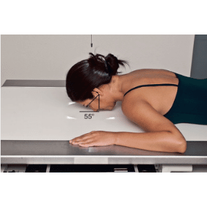
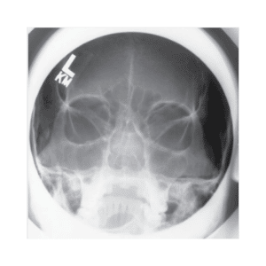
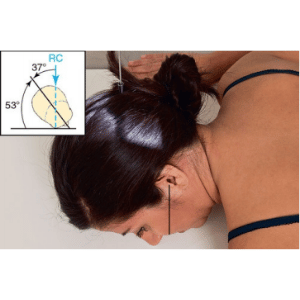
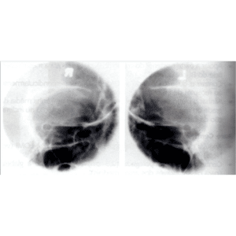

ÓRBITA - FRENTE / método WATERS MODIFICADO
Paciente
Paciente em D.V. ou ortostático, MMSS ao lado da cabeça, MMII estendidos.
Chassis / Filme
18×24 transversal panorâmico.
Raio central
⊥ orientado p/ região do bregma e deve sair no násio.
DFF
1,00 m – com bucky.


Observação: PMS ⊥ ao filme. LLM ⊥ ao filme.
ÓRBITA - OBLIQUA / Método de Rhese
Paciente
D.V. com a órbita de interesse na LCM, apoiando bochecha, queixo e nariz.
Chassis / Filme
24X30 – transversal.
Raio central
15º caudal orientado para o centro da órbita de interesse.
DFF
1,00 m – com bucky.


Observação: PSM obliquado. LAM ⊥ ao filme.